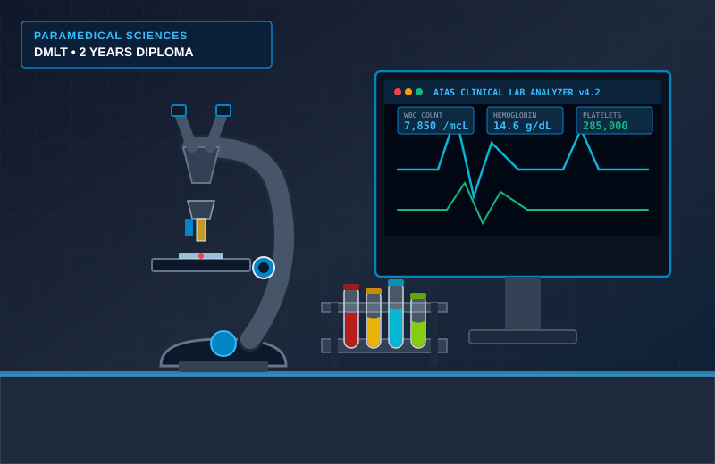
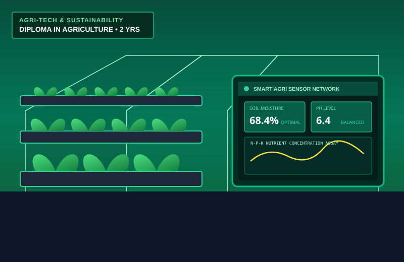
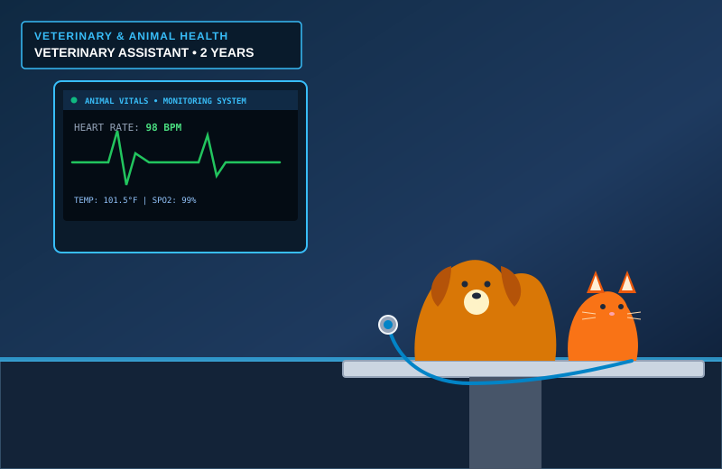
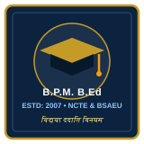
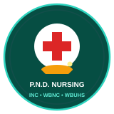
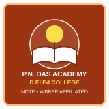

Asansol Institute of Allied Sciences delivers university-partnered 2-year diploma curricula engineered for direct employment. Train in advanced pathological diagnostics, climate-smart agriculture, and clinical veterinary medicine with full hospital & field practicums.
All courses at Asansol Institute of Allied Sciences are 2-year specialized diploma programs delivered with extensive practical laboratory sessions, field visits, and mandatory clinical hospital internships.

Master clinical pathology, hematological profiling, automated biochemistry assays, histotechnology, and diagnostic microbiology under senior clinical mentors.

Focus on climate-smart crop agronomy, modern soil chemistry, commercial horticulture, greenhouse hydroponics, organic farming, and precision agri-business management.

Gain hands-on clinical proficiency in animal anatomy, clinical pharmacology, surgical assisting, disease immunization, pet handling, and dairy/poultry farm management.
The Marie Curie Centre for Interdisciplinary Sciences (MCCIS) at Diamond Harbour Women's University acts as the academic catalyst ensuring high curriculum standards, continuous academic evaluation, and recognized professional certifications.
Through our institutional partnership with Diamond Harbour Women's University (DHWU) and the Marie Curie Centre for Interdisciplinary Sciences (MCCIS), students at AIAS receive cutting-edge scientific education that balances theoretical understanding with clinical and field expertise.
No deserving student in West Bengal should be held back by financial barriers. AIAS maintains an active on-campus Financial Aid Cell providing end-to-end processing support for government student credit cards and state/central scholarships.
Students enrolled at Asansol Institute of Allied Sciences are eligible to avail collateral-free education loans of up to ₹10 Lakhs under the flagship WBSCC initiative at a nominal simple interest rate with 15-year repayment flexibility.
AIAS students are eligible to apply for all West Bengal State and Government of India merit-cum-means scholarships according to their category and marks:
Swami Vivekananda Merit-cum-Means assistance for meritorious students with 60%+ marks.
State assistance scheme for eligible SC, ST, and OBC candidates across West Bengal.
State scholarship specifically dedicated to minority community scholars.
Financial incentive & educational aid for eligible female students pursuing higher diploma studies.
At Asansol Institute of Allied Sciences, learning extends directly into live diagnostic units, smart farm plots, and veterinary surgical wards. We bridge the critical gap between academic knowledge and on-ground industry demand.
Asansol Institute of Allied Sciences is part of a distinguished educational trust in Asansol operating premier institutions in Teacher Education, Nursing Sciences, and Paramedical Fields on Riverside Road, Burnpur.

Method Subjects Offered (12 Streams):


Affiliated to the West Bengal Board of Primary Education (WBBPE) and approved by N.C.T.E. Equipping educators with modern child pedagogical techniques, digital teaching aids, and school internship training.
Follow our transparent, step-by-step admission procedure for the 2026-2027 academic session.
Submit the online inquiry form or call toll-free 1800 897 334 to discuss course selection with an academic counselor.
Verify academic transcripts (10th/12th marksheets, pass certificates, admit cards) and candidate identity credentials.
Our helpdesk facilitates bonafide documentation and application processing for the West Bengal Student Credit Card or scholarships.
Complete registration, receive your formal enrollment kit, and attend the orientation induction on Burnpur Riverside Road campus.
Answers to common questions regarding admissions, qualifications, and student benefits.
Our academic facility features dedicated clinical diagnostic pathology labs, a modern smart-agronomy test greenhouse, veterinary clinical stations, multimedia classrooms, and an extensive scientific library.
| Institution | Program | Toll-Free Helpline |
|---|---|---|
| AIAS (Allied Sciences) | DMLT, Agriculture, Vet Assistant | 1800 897 334 |
| Bijoy Pal Memorial B.Ed | B.Ed [2 Years] | 1800 891 1734 |
| P.N. Das Academy of Nursing | GNM [3 Yrs], B.Sc Nursing [4 Yrs] | 1800 890 7334 |
| P.N. Das Academy (D.El.Ed) | D.El.Ed [2 Years] | 1800 891 1734 |